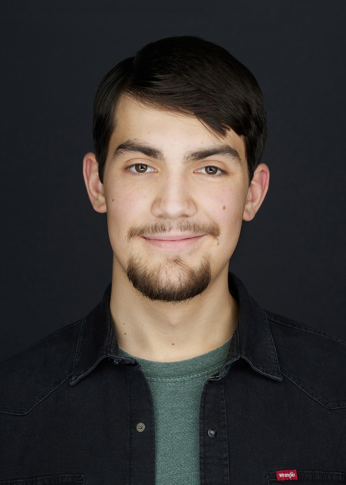
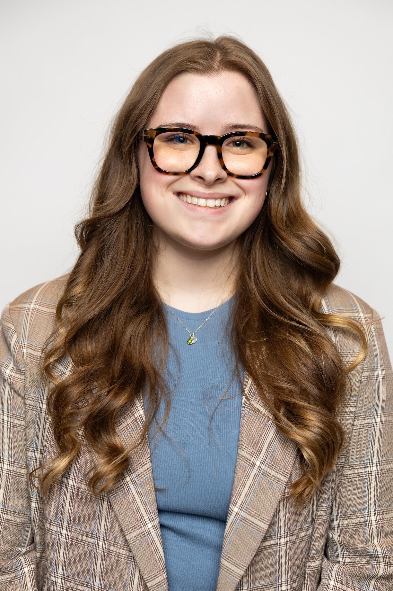

Triangle Rock Productions is a full-service film and video production company driven by a genuine love for the craft. Based in Oklahoma, we specialize in commercial video and cinematic storytelling, with a portfolio spanning corporate, commercial, and creative projects.
We believe every great project deserves a dedicated partner. Triangle Rock works with clients through every stage of production to tell their stories effectively. We cultivate creativity by blending technical precision, storytelling sensibility, and the passion needed to bring your vision to life.
The Team

Kaden Wittig
Co-Founder · Creative Lead
Kaden Wittig is an independent filmmaker from Broken Arrow, Oklahoma, with years of
experience spanning feature films, broadcast television, and commercial video. His
work focuses on telling grounded, human stories through the medium of film. Starting
his filmmaking journey through home videos at the age of 6, he has since directed
multiple festival award-winning short films throughout high school and college, as
well as the feature-length music documentary Pillar: Beyond the Frontline
(2025).
Kaden is a graduate of Tulsa Technology's TV Production program, has an A.A.S. in
Liberal Arts, and graduated magna cum laude with a B.A. in Film and Media Studies
from the University of Oklahoma.
As Co-Founder and Creative Lead, Kaden brings experience and a skillset to
collaborate with clients in reaching their vision. With a focus on high-end visual
storytelling and technical precision, Kaden leads the creative direction from
concept to creation, ensuring a high-quality cinematic production.
View his personal portfolio at kadenwittig.com.

Abigail Hutchcraft
Co-Founder · Director of Operations
Abigail Hutchcraft is from Broken Arrow, Oklahoma, and is currently pursuing a
Juris Doctor at Oklahoma City University School of Law. Prior to law school,
Abigail served as a paralegal in Tulsa and graduated magna cum laude from Oklahoma
State University with a B.S. in Political Science.
As Co-Founder and Director of Operations, Abigail oversees the company's clerical
and administrative functions to ensure every project is supported by a strong
organizational foundation. Her film experience includes executive producing
Murder in Chinatown (2026), working as a production assistant on
Night with a Nice Guy (2025), Up(LIFTING) (2025),
and From a Distance (2026).